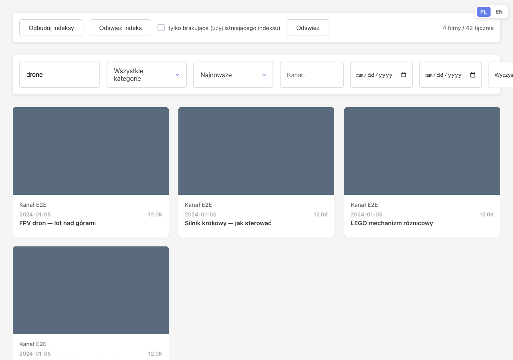
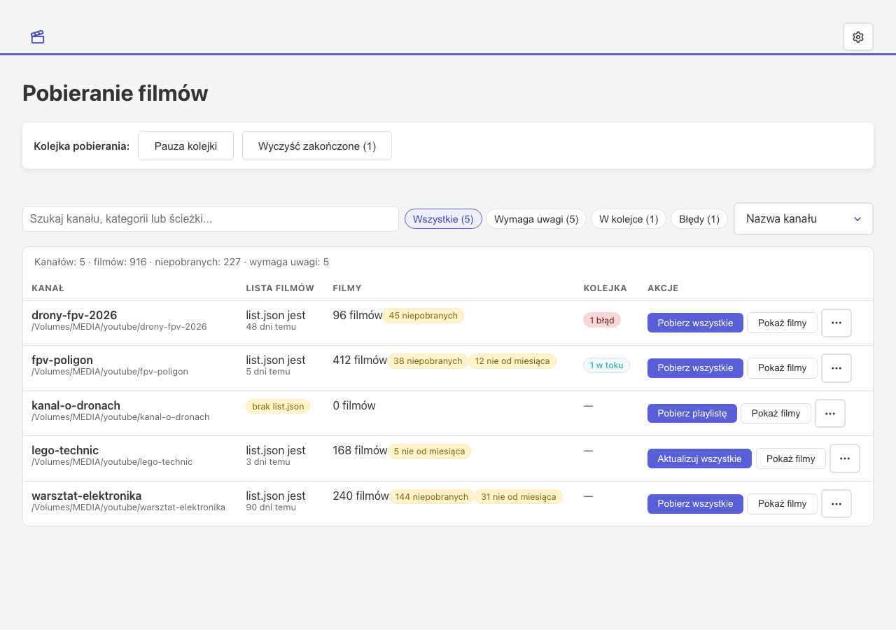
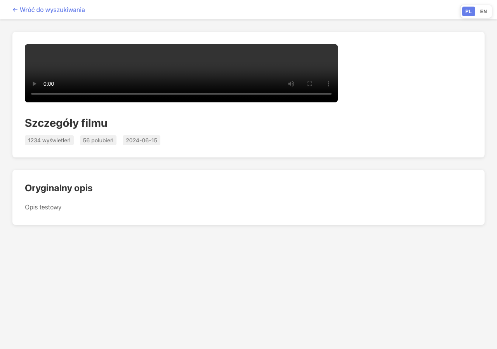

A self-hosted web app for searching, browsing and watching YouTube videos downloaded with yt-dlp. Elasticsearch full-text index, an in-browser player with subtitles, per-channel download config, and a Chrome extension for enqueueing videos straight from YouTube.
View on GitHubTitles, descriptions, comments and subtitles in one Elasticsearch index. Polish queries work without diacritics. Sort by date, views or likes.
A server-side yt-dlp queue with per-folder concurrency, retries, fast-fail for members-only and private videos, and persistence across restarts.
Play the files in the browser with subtitle tracks, AI summaries and the full comment tree, served over your local network.
pnpm install
pnpm run dev # server on :3001, client on :3000
Set VIDEOS_FOLDER_PATH and ELASTICSEARCH_URL in
server/.env, then hit POST /api/videos/refreshCache. Full setup
and configuration live in the README.


